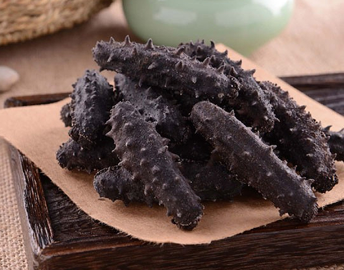

海参产地多又广，海参质量哪家强？
大家应该都听过“南橘北枳”的典故，同一种植物因为生长地的不同而产生了巨大的差异，影响了果实的口感。这也是我们生活中经常会说的，一种产品或者作物的产地之重要性。
现在市面上的海参种类繁多，一般商家在夸自家海参的质量时，都会强调说这是“大连”或是“长海”的，便宜一些的大多都是来自南方城市，例如福建等。从这里也可以看出，如今的业内人士也基本都认可这种挑选办法，即北方的海参质量更为上乘。
那么，接下来我就为大家介绍几种常见的海参及其产地。
一、营养丰富——辽宁海参
简称“辽参”的辽宁海参主要产自大连，这里也是我国养殖海参的发源地之一。据明代的古籍记载，当时的人们就已经知道辽参的质量优良。这当然与辽宁的地理条件分不开，因为辽宁的纬度较高、气温较低，再加上其他的环境因素，这里的海参大约要四五年的时间才能长成。这样的海参自然是质优肉厚、营养好，“辽参”也因此深受各地食客的喜爱。
二、历史悠久——山东海参

和“辽参”一样，山东的海参也有自己的别称——“鲁参”。鲁参主要产自青岛、烟台和威海这三个地区，这里也同样是我国的海参主要产地之一。辽宁养殖海参的历史长，山东烹饪海参的时间也不短，这里还有一道名菜——“葱烧海参”。而且山东和辽宁的地理位置等条件都很相似，所以这里的海参一般也需要三五年的成长时间。
三、成长迅速——福建海参

除了上述的北方城市，其实在南方也有一个海参的主要产地——福建。但是福建养殖的刺参原产自北方，所以这种养殖方式也被称为“北参南养”。也就是说，从辽宁等北方城市引进优质的海参苗，然后在福建等南方城市养殖，依靠这里优越的自然条件，海参成长的时间会大大缩减。而福建的霞浦更是被称作南方的“海参之都”。
四、价格低廉——进口海参
别看如今国内食用海参的人数越来越多，放眼世界你就会发现并不是大多数国家都会食用海参的，即便是在亚洲也不过是中日韩等国家热衷于消费海参。所以，虽然国内的野生海参已经为数不多，并且大多数的海参产品都需要依靠养殖，但是国外的野生海参却依然丰富。再加上国外的海参全是野生的，不需要人工养殖的各种费用，仅从价格上来说甚比养殖的国产海参还便宜。
说到这里，你可能会疑惑：那么海参的质量真的和产地息息相关吗？
从市场目前的情况来看，人们一般都认为辽参第一，鲁参差一些，福建则要再靠后。但凡事都不能说得太绝对，我们在谈到海参的时候同样需要“具体问题具体分析”。
如果要说肉感和营养价值，辽参是上好之选，尤其是辽宁大连产出的海参。因为当地的海水深、温度也更低，海参的生长速度就比较慢，富含的营养也就更多了。体现在海参的特质上，就是海参的肉更厚、刺也饱满、杂质少，营养价值也更高一些。山东因为地理条件的因素与辽宁相似，所以鲁参的整体品质并不比辽参差。
但是要说市场优势，还是要数福建海参。因为福建维度较低、日照时间充足，辅以人工的喂养等方式，海参只需要一年左右就可以收获上市了。也是因为这样的原因，福建海参的产量大、上市时间快，同时在口感和营养方面就远不如北方产地的海参了。不过福建海参的价格更优惠，普通的消费者更能够接受。
于进口海参，一般都来自日本、北美等产地。一开始，这些进口海参因为外表和国产海参差异太大而遭受冷眼。随着相关的海参宣传，人们渐渐了解到了进口海参的特点和营养丰富等特质，在加上实惠的价格打动人心，如今进口海参在国内市场也极受欢迎。
66666
郑重提示：
66666
郑重提示：
66666
郑重提示：
66666
郑重提示：
66666